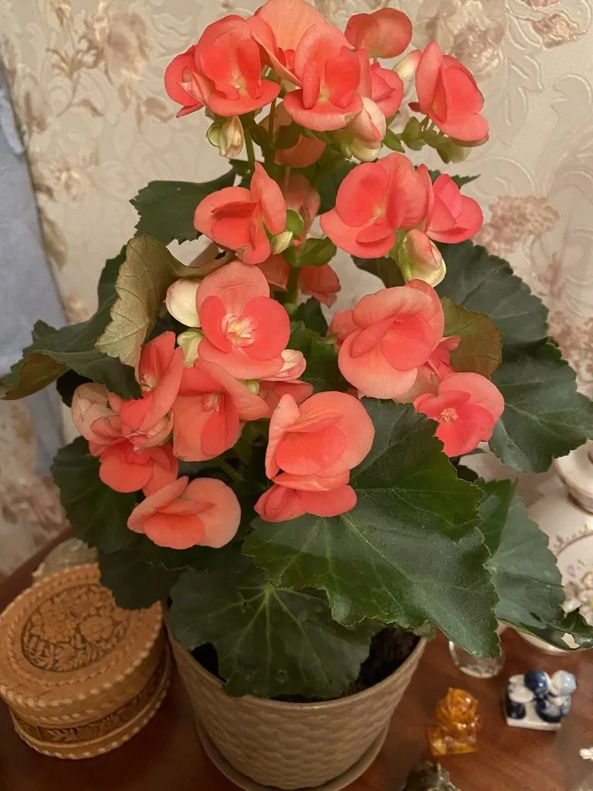

花卉与草本 · 植物界
丽格海棠 Begonia × hiemalis

秋海棠科秋海棠属多年生草本，由球根海棠与野生秋海棠杂交而成，花重瓣似玫瑰，冬春开花，是重要的盆栽花卉。
- 分类
- 门被子植物门纲木兰纲目葫芦目科秋海棠科属秋海棠属
- 栖息环境
- 温室与家庭盆栽，喜温暖湿润、明亮散射光
- 地理分布
- 园艺杂交类群，中国各地温室与家庭广泛栽培
- 保护级别
- 栽培类群，无野生种群；不涉及保护等级
物种志
丽格海棠为秋海棠科秋海棠属多年生草本，由球根海棠与野生秋海棠杂交育成，高二十至四十厘米，茎肉质多汁。叶片互生，心形至卵形，边缘有锯齿，表面深绿有光泽，质地脆嫩。花数朵生于叶腋，花重瓣或半重瓣，形似小玫瑰，颜色有红、粉、橙、黄、白等，花期十二月至翌年五月；蒴果具翅，果期夏季。
丽格海棠是人工杂交类群，中国各地温室和家庭广泛栽培。它喜温暖湿润和明亮散射光，忌强光直射和高温闷热，适宜疏松透气、排水良好的微酸性基质。花重瓣、色彩丰富、花期长，是冬春季节重要的盆栽花卉和年宵花；也可用于花坛和组合盆栽。栽培中需控制浇水，避免叶面积水和根茎腐烂，并保持良好通风。
形态与习性
- 株高20–40 cm，茎肉质
- 花期12 月至翌年 5 月
- 果期夏季，蒴果具翅
- 光照明亮散射光，忌暴晒
- 水分喜湿润，忌叶面积水
- 土壤疏松透气的微酸性基质
- 主要用途盆栽观赏、年宵花与组合盆栽
趣味知识
- 丽格海棠由球根海棠与多种野生秋海棠杂交而成，兼具大花与连续开花的特性。
- 它的重瓣花形似小玫瑰，因此常被称为玫瑰海棠。
- 丽格海棠的茎叶肉质多汁，浇水过多极易烂根，养护讲究见干见湿。